The pipeline
From capture to glyph, entirely on the local machine.
Language is chosen before capture and locked. Everything runs on the local CPU; the only network is a one-time model download and the LAN link to the node.
![The live path. Inside the wearable, four microphones feed echo
cancellation, beamforming and direction of arrival on a
ReSpeaker board, which passes to a Raspberry Pi Zero 2 W. The
Pi sends the direction of arrival straight down to the left and
right vibration motors, and sends audio plus direction on to
the computer, which returns power. On the computer a lossless
deadline batcher splits into a true signal for prosody and a
gained copy for recognition, feeding four independent stages —
voice for prosody, speaker for diarization, text for
recognition and sound for tagging — which join per word into
CaptionSpec. CaptionSpec goes over SSE to the browser, where a
web app applies revisions and a playhead presents them to the
stage, and also to a salience stage whose cue reaches the
motors on an optional dashed path.](figure/pipeline.png)

| Constraint | Reason |
|---|---|
| Gain is applied to the recognizer's copy only | Prosody measures loudness from the captured signal; gaining it first maps a whisper and a shout to the same type size. |
| Word onsets are never synthesised | Prosody, the motion clock and the read-ahead floor all key off per-word start and end times, so a recognizer without them can supply text at the verifier boundary and nowhere else. |
| Utterances are reconciled, not rebuilt | Streaming and verified transcripts mismatch on nearly every utterance. Rebuilding the block would flash the sentence at every pause, so matches are corrected in place and insertions added at their spoken position. |